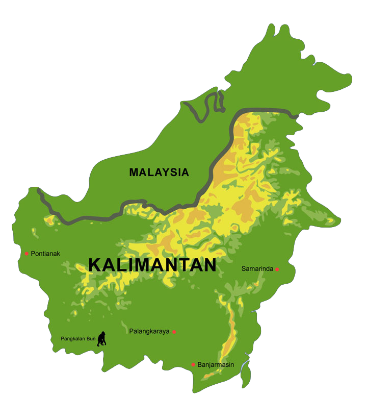

Rumah adat, busana, tarian, senjata pusaka, musik, tradisi, hingga kuliner dari lima provinsi di Pulau Kalimantan, lengkap dengan makna di baliknya.
Ketuk titik provinsi di peta

Menampilkan seluruh warisan budaya Kalimantan